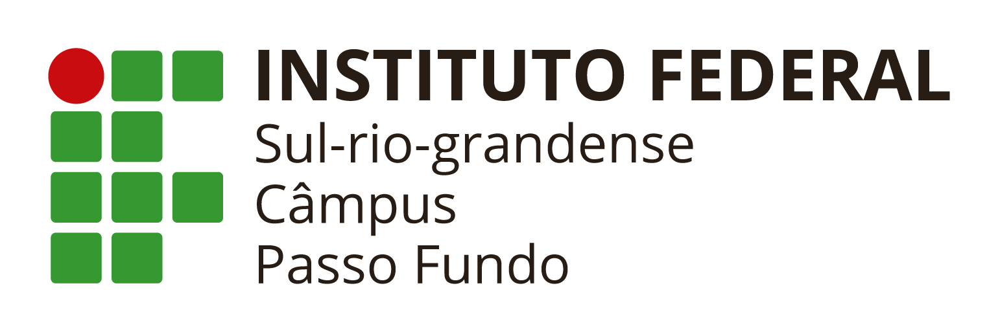

Prazo
Até 14 de maio, às 19h
Garanta a inscrição dentro do prazo oficial para não perder a participação no processo seletivo.
Ver cronograma completo
IFSul Campus Passo Fundo — 120 vagas gratuitas em cursos técnicos e graduação.
Informações resumidas desta página com editais e inscrições oficiais nos links destacados.

Inscrições encerram em
Acompanhe o prazo oficial e avance para os editais e formas de ingresso logo abaixo.
Um resumo direto para entender prazo, gratuidade e como funciona a seleção antes de avançar.
Prazo
Garanta a inscrição dentro do prazo oficial para não perder a participação no processo seletivo.
Ver cronograma completoInvestimento
Sem mensalidade e sem taxa de inscrição, com formação técnica e superior reconhecida federalmente.
Entender custosSeleção
Os cursos técnicos usam sorteio eletrônico. Ciência da Computação usa prova de redação eliminatória.
Comparar modalidades4 cursos, 120 vagas — todos 100% gratuitos e com reconhecimento federal.
Educação pública de excelência, gratuita e reconhecida em todo o Brasil.
Sem taxa de inscrição, sem mensalidade. Ensino público de qualidade acessível a todos.
Ciência da Computação com conceito máximo, garantindo excelência e reconhecimento nacional.
Laboratórios modernos, biblioteca, espaços de convivência e acesso a tecnologia de ponta.
Formação prática com alta inserção no mercado de trabalho regional e nacional.
Auxílios para alimentação, transporte e moradia, apoiando a permanência no curso.
Professores com mestrado e doutorado. Ensino de excelência, reconhecido internacionalmente, com diplomas de alto valor.
Fique atento aos prazos oficiais do processo seletivo.
Inscrições abertas no site processoseletivo.ifsul.edu.br
Último dia para realizar sua inscrição
Divulgação dos locais de prova para Ciência da Computação
Prova para o curso de Ciência da Computação (3h de duração)
Transmissão ao vivo pelo YouTube do IFSul
Divulgação em processoseletivo.ifsul.edu.br
Para os cursos técnicos (Edificações, Mecânica e Informática), é necessário ter concluído o Ensino Médio. Para o Bacharelado em Ciência da Computação, também é necessário Ensino Médio completo.
Os cursos técnicos utilizam sorteio eletrônico para seleção dos candidatos. Já o Bacharelado em Ciência da Computação utiliza uma prova de redação de caráter eliminatório, com duração de 3 horas.
Zero! É 100% gratuito. Surpresa! Você não vai pagar nada. Sendo uma instituição pública e federal, oferecemos ensino de excelência com total gratuidade para sempre. Não há mensalidade nem taxa de inscrição.
50% das vagas são destinadas ao Acesso Universal e 50% à Reserva de Vagas para egressos de escolas públicas, conforme a Lei nº 12.711/2012. As cotas incluem critérios de renda, autodeclaração racial e pessoa com deficiência.
Não. O candidato concorre apenas a uma vaga, no curso e turno escolhidos no ato da inscrição.
Os editais estão disponíveis no site processoseletivo.ifsul.edu.br. Você também pode baixar diretamente: Edital 29 (Técnicos) · Edital 30 (Superior)
120 vagas gratuitas em cursos técnicos e graduação. Não perca o prazo — inscreva-se agora!
Inscreva-se Agora